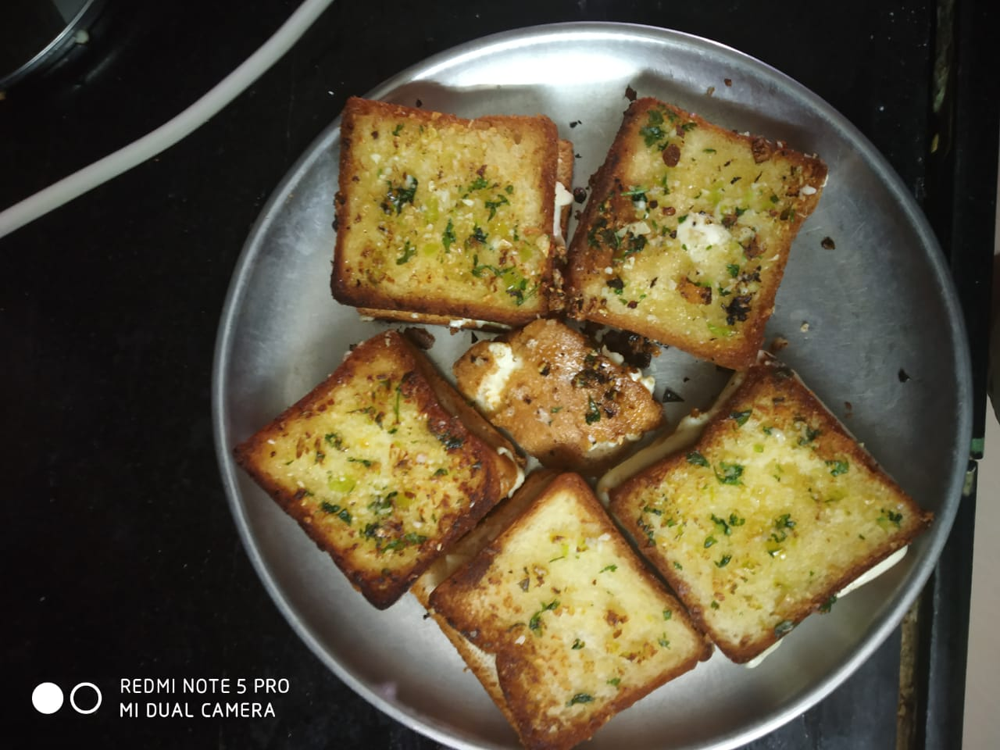
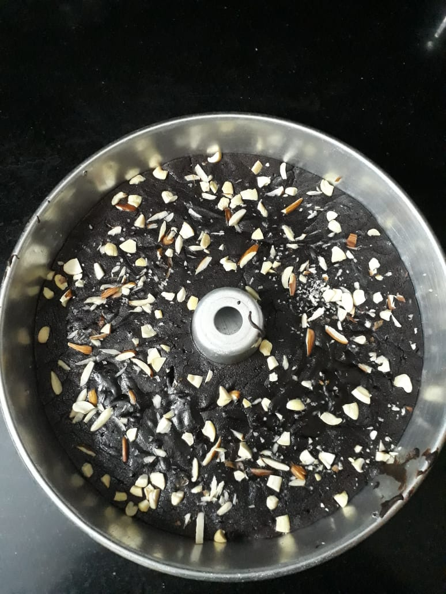
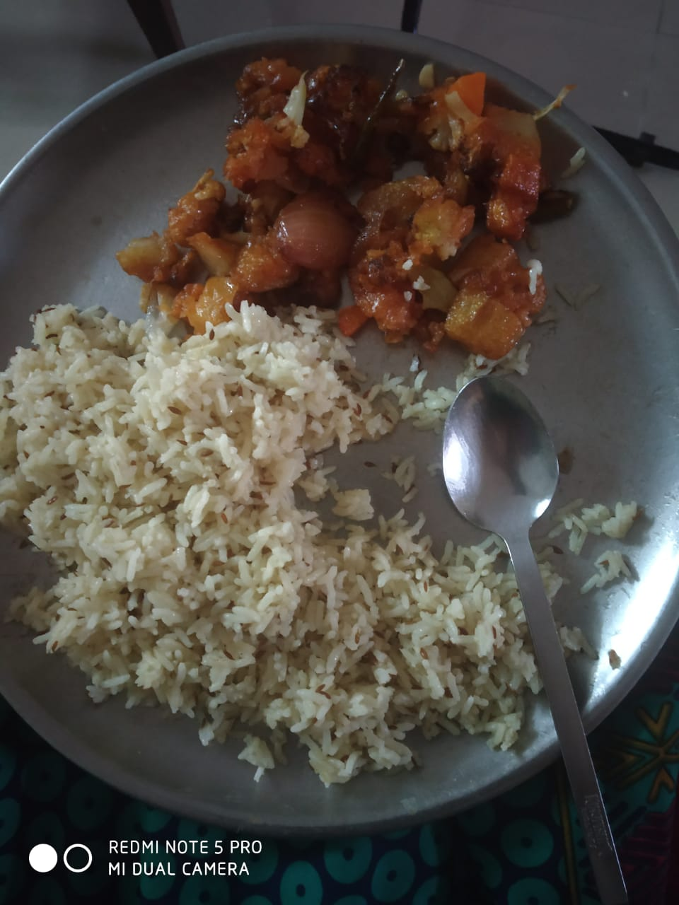

My Interests
Drawing
I do pencil drawings.This really helps me as a deviation from my stress. You can have a look at some of my work


Cooking
I like experimenting out with new recipies and fortunately the outcomes are always good until now.
  I also have other interests like playing casio,writing stories and singing.I am a trained classical singer.I can play songs on the casio,I have not taken any training though.